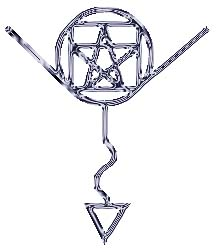

Fotamecus: Viral Time Compression/Expansion Servitor
by Fenwick Rysen
27 June 1997
"What is time, but a variety of one thing?"
---Austin Osman Spare
History
Fotamecus was originally a sigil created in spring of 1996 when I was
showing the Mad Prophet some sigilization techniques. The Mad Prophet
kept the paper used for the demonstration and began using it when he was
driving, the sigil's intent being to "Force Time Into Compression."
Ruben, a friend of both me and the the Mad Prophet, was brought in on
this, and two people began directing energy at it.
Fotamecus crossed the Sigil/Servitor line after both Ruben and the Mad
Prophet attended a Metallica concert in Sacramento at which Quinn is said
to have smiled evilly when looking at the crowd and muttered "Free
gnosis..." before opening himself to channel and becoming a
one-man-mosh. On the drive back, both Ruben and the Mad Prophet dumped
the excess energy into Fotamecus and made it home in half the time it
should have taken.
I was informed and intrigued, and on the Death Valley Pilgrimage (three
days in a van with seven chaos mages) Fotamecus was put to the test: The
group directed a great amount of energy at him to help shorten the time to
drive from Santa Rosa (north of San Francisco) to Death Valley.
On the first leg of the trip everyone looked at the clock before entering
Vallejo. Fifteen minutes later we had travelled almost fifty miles,
through the MacArthur Maze (the most dizzying interchange of highways
known to man), in the Thanksgiving traffic. The second car with us, which
we lost immediately preceding this, had continued to drive undaunted
behind us. They never stopped. We wasted 45 minutes in Livermore before
getting back on the road and coincidentally running into them again.
There was only one side effect.
The last three exits on I-5 before Bakersfield, which should have taken
us 15 minutes to pass, took closer to an hour. For time compressed, time
was expanded. For us, expanded on perhaps one of the most boring
stretches of highway in California.
At this point, several of my friends and I sat down and did some work on
Fotamecus, making him a viral servitor: He could spawn copies of
himself. We wired these together into a network so that if one
compresses time but doesn't want to expand it, it passes off the duty for
expansion to another Fotamecus servitor in the network. They all work
together, and the more copies out there, the better it works.
Sigils
|
Fotamecus was originally a sigil which then became conscious and turned
into a servitor. Modifications were made to the original sigil to make it
a viral servitor. The Fotamecus viral servitor sigil appears at right.
The word "Fotamecus" itself is the original mantric sigil from which the
above graphical sigil was created. In addition to focusing visually on
the graphical sigil, one can focus auditorilly by chanting the mantric
sigil "fo-tuh-meh-kus". |
 |
Instructions for Use
Spawning and using a new copy:
- Extend thine forefinger
- Either drawing with a physical medium or by tracing in the air in
front of you, trace the sigil of Fotamecus. At the same time you draw the
sigil, visualize a beam of octarine light shooting from your third eye to
trace the sigil with your finger. It should leave an octarine copy of the
sigil glowing where your finger inscribed it.
- Use Fotamecus by focusing on the sigil before you, sending it as much
or as little energy as you like, along with intent to compress or expand
time. And, as always, the "Garbage in, garbage out" pronciple applies, so
give him the energy that he needs.
- Instruct Fotamecus as to what he should to reciprocally with
stretching/expanding time. For example, if he expands time for you, ask
him to contract it the next time you drive somewhere. If you contracted
time, ask him to expand it the next time you wake up, giving you more time
to rise. Or the easiest thing to do is ask him to pass off the
expansion/compression to another servitor in the viral chain, letting
someone else who needs it use it.
- Sit back and see what happens!
Petitioning help from a distant Fotamecus servitor:
- Calm the mind for a moment.
- Send out a call in your mind, asking for Fotamecus to come and help
you, telling him briefly whether you need time expanded or compressed.
- Continue doing what you were doing, and see if it works.
Notes
- When using Fotamecus, it is easiest just to send energy along with
intent to either compress or expand time. Fotamecus is fairly
intelligent and takes care of the rest.
- After charging, don't worry about it. Fotamecus seems to work best when
you forget he's even there working away. Most effects are noticed
afterwards: "Hey, it's only been fifteen minutes and my CD just played
through twice..."
- There have been people who after working with Fotamecus have had some
success in visualizations involving pulling the time stream through
themselves and controlling it even better than Fotamecus. But Fotamecus
seems to get a little bit pissy if you do his job better than he does,
so don't expect him to work well for you if you start doing this on your
own. Not that you need him any more at that point.
- Perhaps the best image to represent Fotamecus is a clock being crushed
by a sledgehammer. Clocks work on the premise that time is stable and
measureable. Fotamecus works on the premise that time is unstable and
malleable.
- Fotamecus has a very casual, easy-going personality. His easygoing
and considerate personality is probably due in great part to his parents:
Seven friendly college-aged chaotes stuffed in a van for a long-haul trip
from the Bay Area to Death Valley over Thanksgiving vacation in 1996.
Looking at who he had to learn from while he was "growing up" (developing
the early parts of his personality that were as yet unformed and left to
spontenaeity), it's hard to imagine he would have come out anything
but easy-going.
- Please e-mail me any questions, comments, or interesting stories.
This document Copywronged (x) 1997 by Fenwick Rysen
All rights reversed. Feel free to copy, hack,
splice, mangle, mutilate, spindle, twist, tear, or
re-print, as long as this copywrong notice remains
intact. Questions to fenwick @ chaosmatrix . com or
to Chaos Matrix: http://www.chaosmatrix.com